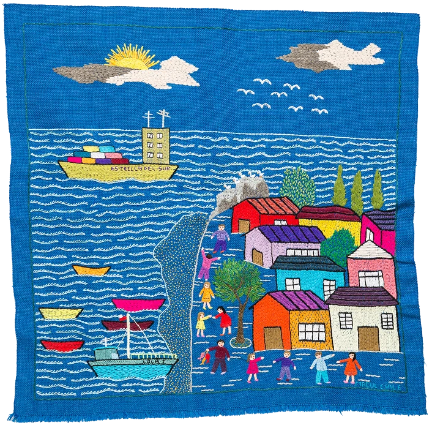
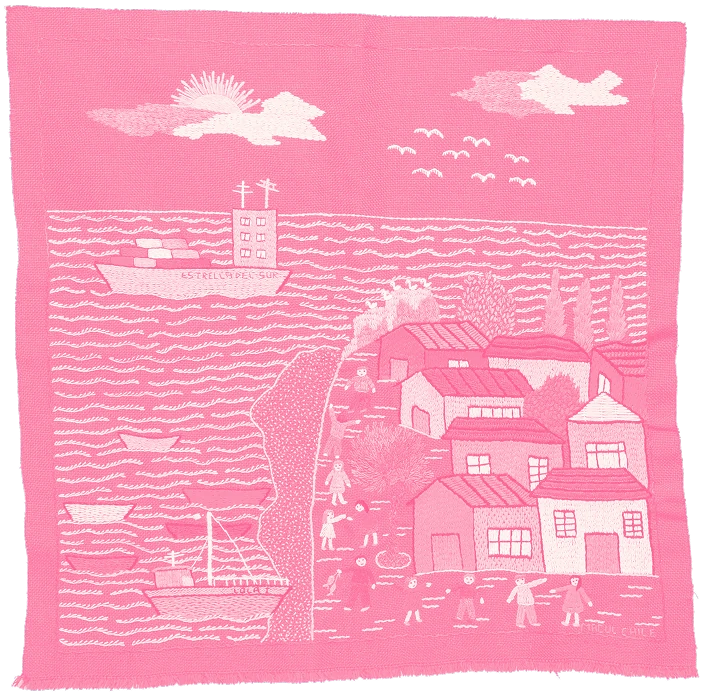
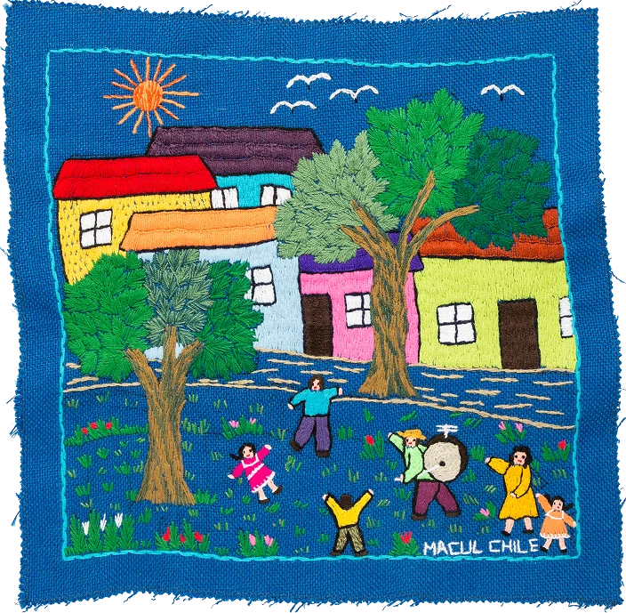
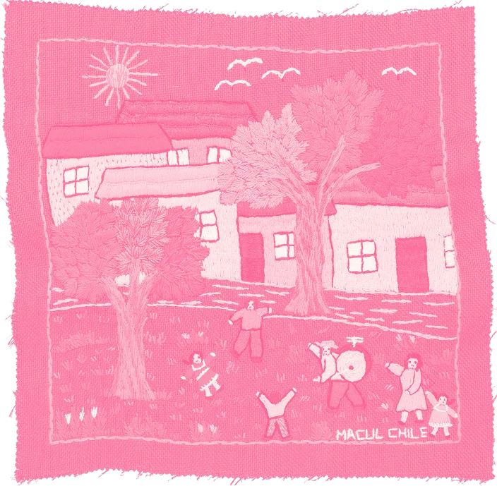
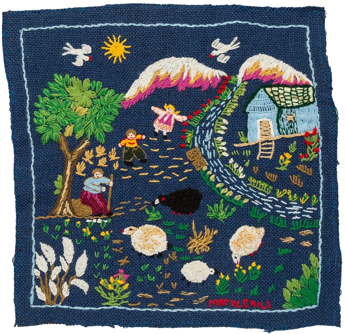
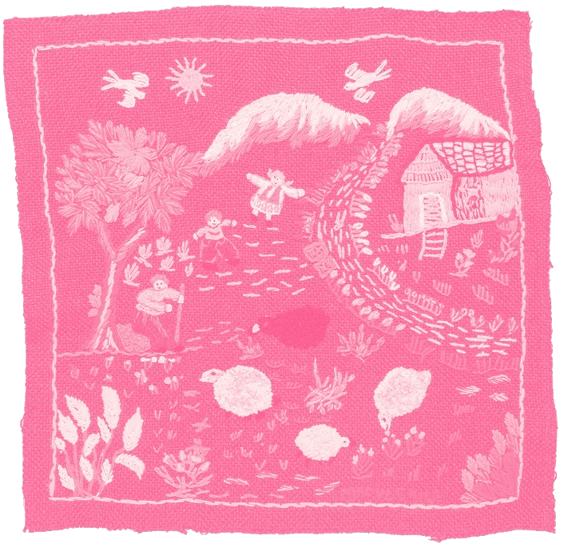

Entre hilos, colores y puntadas, las Bordadoras Lomas de Macul han dado vida a historias, recuerdos y paisajes que retratan cultura e identidad a través de sus bordados.
Este archivo es una invitación a conocer su historia, descubrir sus obras y explorar los detalles que hacen único su trabajo, manteniendo viva la memoria de quienes han bordado parte de nuestra historia.
“Conocer la historia del bordado es conocer la historia de las mujeres”
- Rozsika Parker, 1984


historia del taller

el archivo

sobre el proyecto